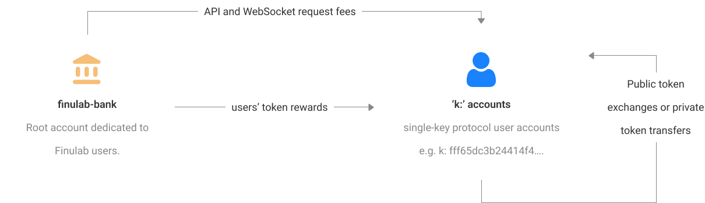

Finux: a market sentiment
data exchange utility token
0 - 0. Problem Statement
In the stock and cryptocurrency markets, how can we monitor and track market participants’ outlooks and utilize those perspectives to determine price targets and action recommendations?
0 - 1. Introduction – Finulab: an anonymous, personalized financial social media and terminal.
In the stock and cryptocurrency markets, how can we monitor and track market participants’ outlooks and utilize those perspectives to determine price targets and action recommendations?
In the development of Finulab, the main objective was to create a platform which welcomes market participants to exercise their right to the freedom of speech by expressing different perspectives, as well as their countering criticisms. Generally, we cannot and must not take information at face value on the basis of trust. This is especially the case in our financial markets; given that, if the information is discovered to be incorrect, not only do we have to overcome the embarrassment of having abided by it, but also, in some cases, financial loss. Rather than accepting information on the basis of trust; it is imperative to subject that information to a critical review process. Through that process, fair criticisms can arise which can then mold the given information into either the accepted truth or debunked, fake narrative. We believe that these discussions are not only informative and supportive in the performance of due diligence, but also a means of identifying the truth in perhaps the most chaotic sphere of life: business.

As a financial terminal, Finulab’s objective is to ensure every glance offers insights which support investors’ journey towards financial freedom. To these ends, Finulab also provides easy means of engaging with financial data through providing recommendations (buy, hold, or sell) and price targets. We firmly believe in the motto: “united we succeed”. Even though an individual recommendation or price target may be wrong, the collective recommendations and price targets of the market offers actionable insights. We believe market participant’s engagement on Finulab through citizen journalism and market analysis is a tremendous public service; as such, we believe that a nod of appreciation is not a sufficient means of demonstrating our gratitude for Finulab’s users. Mere words of thanks, although kind, cannot tangibly benefit users’ lives. Hence, we have augmented Finulab with a reward protocol through Finux.
0 - 2. Introduction – Finux: a market sentiment data exchange utility token
The Finux is a token contract is built and deployed on Kadena’s blockchain, across all 20 chains (chain 0 through 19). We primarily selected to deploy on Kadena’s infrastructure due to:
- the minimal gas fees associated with transactions,
- and the pact smart contract language, which allows us to upgrade the contract’s logic to better adapt to users’ future needs by offering more functionalities.
Finux is designed to be a market sentiment data exchange utility token. Finulab users are rewarded in Finux for engaging on the platform through citizen journalism and market analysis; these activities provide Finulab data around market participants’ future outlooks (section 2 & 3). This data will be aggregated and made available to the general public on Finulab’s user interface (UI), free of charge. Further, on November 10, 2024, Finulab will release API and WebSocket services to provide real-time sentiment data for both stocks and cryptocurrencies. Finulab will ensure that there is a free-tier access to the data for low volume API requests. However, high volume requests, which place great loads on our systems, will require payment through Finux. Finux will be the only acceptable currency to obtain any and all market sentiment data generated on Finulab. Hence, at the moment, the token’s main utility is to serve as: the method of payment for high volume access to Finulab’s market sentiment API and WebSocket services.
Note on White Paper’s Status & Finux’s Utility:
at Finulab, we are committed to developing the future of finance through careful consideration of market participants’ needs. As such, this white paper’s status is and will continue to always be: “work in progress”. As we continue to expand our suite of applications, products, and services, the utilities offered by the Finux token will only continue to grow. Hence, in accordance with our growth, this white paper will be updated to appropriately to reflect our cutting-edge developments and the additional utilities of Finux.
1 - 1. Finux – Tokenomics & Purpose: by the people, for the people
Finux has a capped, maximum supply of 150 million tokens; further, 100% of the supply is entirely committed to the users of Finulab—all 150 million tokens will be utilized to reward Finulab’s users for their engagement on the platform through citizen journalism and market analysis.
As mentioned in section 0 – 1 & 2, in the development of Finulab, our main objective is to support market participants in sharing their perspectives, future outlooks, and price movement expectations—for more details on the utilization of these data points, see section 3. As a result, we view Finulab as a platform which open sources financial news and analysis from market participants; further, we understand that the value of Finulab as a financial research platform is contingent on users’ contributions. Hence, to incentive quality contributions and encourage citizen journalism, Finulab is committing 100% of Finux’s supply to rewarding the users of the platform. As a byproduct of these rewards, users obtain the following privileges.

- They have the ability to sell their rewards on centralized or decentralized exchanges to other individuals or companies that require the token for high volume access to Finulab’s market sentiment data services.
- If users require high volume access to financial sentiment data, they can instead choose to use their rewards as a form of payment to access Finulab’s services
Note: as Finux tokens can only be earned through engagement with Finulab, the distribution of the token to the public is not possible to predict at the moment. Distribution forecasts will change on a real-time based on engagement rates. However, note that the maximum circulating supply of the token will be 150M. When we obtain the initial data from users’ engagement, we will come back to update this whitepaper with our Finux distribution forecasts.
1 - 2. Finux – Contract Configuration: a safe and secure multi-chain design
The safety and security of all users was our main priority in the development of Finux. As such, the Finux token contract only supports ‘k:’ accounts, which are intended to have a single-key account protocol. Consider the following keypair:
If a user wants to create a Finux account, the token contract ensures and enforces that the account’s wallet address is the below across all chains:
By doing so, the single-key protocol is enforced across all the chains. For this account to commit any transactions or calls to the functions in the Finux token contract, the key pair specified above is the guard that must be validated, and no other key-pairs work. Therefore, another keypair controlling different chains of an already created user account (i.e., squatting) is not a possibility. This ensures that a user has absolute custody of their account and wallet across all chains.
For a summary of all the possible transactions that can occur in the Finux ecosystem, in accordance with the design and limitations of the token contract, please refer to FIG. 2 below.
FIG. 2. – Displayed above are all the possible transactions that can take place in the Finux ecosystem. The eco system has a root account (i.e., finulab-bank), which holds the initial & maximum supply of 150M tokens. This account then rewards the users of Finulab, which will be provided single-key protocol accounts (i.e. ‘k:’ accounts). Thereafter, users can transfer the token between one another or sell them across centralized or decentralized exchanges. Further, if users require high volume access to Finulab’s API and WebSocket services, they can make a payment to the root account (i.e. finulab-bank) to obtain those services.
1 - 3. Finux – Contract’s Request Keys: open development, security through transparency
We fundamentally believe in developing in the open. Hence, to audit and validate that the token’s contract operates as specified above, please feel free to visit the links specified below for source code and the request keys affiliated with the contract’s deployment.
Finux Token Contract – Request Keys for Mainnet Deployment
FIG. 3. – Displayed above are the links to Finux’s deployment onto the Kadena blockchain. These links include the Finux token smart contract.
2 - 1: Motivation for Finulab – Intermission Part 1
Due to the popularity of the analysts’ recommendations system, it is a factor in many market participants’ due diligence and market research process—as an example of the system, we have included the table below.
| as of Mar 22, 2023 | Recommendations | Price Targets | |||||
|---|---|---|---|---|---|---|---|
| Stocks | Polled | Buys | Holds | Sells | Low | Medium | High |
| AAPL[1] | 39 | 30 | 7 | 2 | $116.00 | $173.00 | $199.00 |
| MSFT[2] | 49 | 41 | 7 | 1 | $212.00 | $285.00 | $325.00 |
| GOOG[3] | 49 | 44 | 5 | 0 | $89.88 | $125.00 | $160.00 |
| AMZN[4] | 53 | 48 | 4 | 1 | $90.00 | $134.50 | $160.00 |
| TSLA[5] | 46 | 24 | 17 | 5 | $90.00 | $210.00 | $320.00 |
FIG. 4. – Displayed above are the count of polled analysts, as well as their action recommendations and price target statistics; these data points were pulled from https://money.cnn.com[1 – 5].
In the examples above, the selected stocks are the 5 largest publicly traded American corporations. Notice that even for these companies, the count of polled analysts does not seem statistically significant. Further, despite having access to the same information, these analysts reach vastly different recommendations and price targets, which reduces the system’s reliability. Hence, in the development of Finulab our main focus was on improving this system so that it can generate statistically reliable results, which can then better inform the general public. To do so, we must first answer the following question: we will then utilize our response to the question to address the guiding problem statement of this white paper.
1.To generate statistically reliable results, who should be surveyed for recommendations and price targets?
Our answer to this question, which is documented in the next section, relies on the following notations.
η | a non-negative integer, a number in the set [0,1,2,…,∞)
bp | bid price, the price which an independent buyer is willing to pay for a share or coin
ap | ask price, the price which an independent seller is willing to accept for a share or coin
T ={ t0,t1,t2, …} | a set of all possible future times, the current time set to t0 𝑡
P ={ pt0,pt1,pt2, …} | a set of all stock prices correlating to each time in the set T
2 - 2: Motivation for Finulab – Intermission Part 2
In order to address the question in the previous section, we must first define market price, and determine how its numeric value is reached. NASDAQ’s glossary defines “market prices” as, “the amount of money that a willing buyer pays to acquire something from a willing seller, when a buyer and seller are independent and when such an exchange is motivated by only commercial consideration”[6]. Given that this definition appears appropriate and reasonable, we will use it in this paper. Hereafter, when we write market price, we are referring to the amount of money utilized to facilitate a transaction between an independent seller and buyer.
Now we can turn our attention to how the numeric value of market price is reached. Let’s consider the following scenario—assume that there exist only two market participants with one being an independent seller of a single stock for an ask price of 𝑎 , and the other being an independent buyer of that stock with a bid price of 𝑏 . In this scenario, for a transaction to take place between them, note that one of the following must be true:
1 | ap=bp,
2 | or ap ≤ bp.
Note: we have decided to leave out the case of ap ≥ bp, because if ap = bp, then this scenario simplifies to the first case above. However, if ap > bp, then no transaction takes place between the buyer and seller.
In the first case, the ask and bid price are strictly equal. Hence, the seller receives the amount he or she is willing to accept, while the buyer spends the amount he or she is willing to pay. In this scenario, not only do we know that a transaction will take place, but we also know the exact market price, which is ap or bp . Granted they are strictly equal, it does not matter which.
In the second case, the ask price is less than or equal to the bid price. Hence, we know that a transaction will take place; given that: the seller will at least receive the amount he or she is willing to accept, while the buyer will at most spend the amount he or she is willing to pay. However, despite knowing that a transaction will take place, note that we do not know the exact market price. If the seller is kind, he or she will sell the stock for and receive ap. However, if the seller recognizes that the buyer is willing to pay more, he or she will most likely increase the price to: x such that ap < x ≤ bp. Hence, the market price appears to be a random amount 𝑥 in the range of 𝑎ap ≤ x ≤ bp , and we will not know x (i.e., the market price) until the transaction between the seller and buyer is finalized.
Expanding on our observations from this scenario, in the stock or cryptocurrency markets where multiple orders flow through, we will not be able to predict before-hand participants’ exact ask or bid prices. As a result of that, as well as a potential negotiation that may take place as demonstrated above in case 2, the market price appears to be a random variable—an unknown amount which is determined momentarily when a seller and a buyer reach a transaction agreement. However, following their transaction, it appears that the market price becomes an unknown amount again until another seller and buyer reach a transaction agreement.
Given that the market price’s numeric value seems to be determined through the random ask and bid process, we may never know before-hand, the exact price of a stock at some time in the future. However, we certainly do know the individuals responsible for setting the market price. If we assume that T ={ t0, t1 , t2 , …} is the set of all future times beginning with the current time, t0 , and P ={ pt0,pt1 ,pt2 , …} is the set of all market prices correlated to the times in the set T . Then, for any stock or cryptocurrency, the market price (i.e., ptn), at time tn , is determined by market participants; specifically, the subset of market participants submitting asks and bids as illustrated in the following diagram.
set of all market participants at time tn
FIG. 5. – At time 𝑡 , detailed above in the gray is the subset of market participants that can determine the market price 𝑝 for any stock.
For any stock or cryptocurrency, even though we do know that market participants will set the market price at time tn, given that the subset of participants submitting asks and bids will change over time, the precise answer to the question specified in the previous section (section 2 - 1) is time-dependent. In order to precisely determine a reasonable recommendation and price target for time tn at time t0, we will need to:
- identify the exact subset of market participants that will be submitting asks and bids at time tn, and
- survey them after they have been provided all the market information that will be available at time tn .
At time t0, neither of the above is achievable—however, identifying market participants’ current outlooks for the future of any stock or cryptocurrency, based on all publicly available information, is certainly possible. By market participants’ current outlooks, we are referring to their average price target and recommendations distribution (i.e., the percentage of participants that recommend buy, hold, or sell) at time t0. These current outlooks can only apply until some time in the future (i.e., t0) when material information, which was previously unknown in the period between t1 to tn-1𝑡 , is made available to the public. Despite this limitation, we can certainly leverage market participants’ current outlooks to make inferences about the market state and potential future price movements.
Hence, our answer, to the question proposed in section 2 - 1, is market participants. We believe that surveying market participants over analysts provides more accurate recommendations and price targets. Note that most analysts are not allowed to trade the stocks or sectors which they cover; in these cases, they do not have a direct impact on the market price. However, they do have an indirect impact on price through market participants’ interpretation of their research and publications. This implies if we are trying to identify the markets’ future expectations, we should go directly to the participants’ that drive market price.
Now that we have identified our target survey population, which is market participants, we can now return to and address the guiding problem statement of this white paper (section 0 - 0), which is also restated below.
In the stock and cryptocurrency markets, how can we
accurately capture market participants:
a. average price target, and
b. recommendations distribution (i.e., percentage of participates that recommend buy,
hold, or sell)?
3 - 1: Finulab – Quantitative Objective
In addition to providing market participants the ability to critically discuss stocks and cryptos (section 3 - 4), our objective, in the development of Finulab, is to quantitatively capture market participants’ future outlooks so that we can directly address the problem statement of this white paper (section 0 - 0). Hence, Finulab contains functionalities which empowers users with the ability to provide their price target and recommendation (i.e., buy, hold, or sell) for any stock or cryptocurrency. As mentioned in section 2 - 2, price targets and recommendations are only valid until some new material information enters the public knowledge. Hence, to accommodate for the changes is public information, users are also granted the privilege of being able to update their price targets and recommendations at any time.
Given that Finulab is an application centered around stocks and cryptocurrencies, we expect a vast majority of its users to be market participants. Hence, through the functionality mentioned in the previous paragraph, we will be able to approximate the market participants’ average price target and recommendation distribution for any stock or cryptocurrency at a specific confidence level and within a certain margin of error. We believe it is important to call out the confidence level and margin of error associated with each stock or cryptocurrency’s survey results, as these two figures underscore the reliability of our approximations. The results of the price target and recommendations surveys, as well as the confidence level and margin of error associated with each result, will be made available to the general public and all users of Finulab. We believe it is important to make this information publicly available, as our objective with Finulab is to provide market participants a data terminal that can be informative and supportive in the performance of due diligence and market research.
Furthermore, given that the data Finulab collects through these surveys is a byproduct of users’ contributions, it is important to us to develop Finulab with transparency and ensure that its market related data is publicly available. As mentioned previously in section 0 - 0, we consider users’ contributions on Finulab, including these survey responses, to be a form of service. As such, all survey responses will be rewarded with Finux tokens; for further detail on Finulab’s reward protocol, see section 3 - 5.
Concerning to our statements in section 2 - 1, regarding the count of polled analysts not appearing to be statistically significant, we can now expound further to determine the minimum sample size of users we need to survey on Finulab in order to reasonably approximate the market’s average price target and recommendations distribution. The methodology we used to determine the minimum sample size for average price targets and recommendations distribution is documented in section 3 - 2 and 3 - 3,respectively. Further, our full answer to the guiding problem of this white paper is documented in section 3 - 4.
3 - 2: Finulab – Minimum Sample Size Required to Approximate Average Price Target
Our objective is to identify the average price target of market participants for any given stock or cryptocurrency. We can achieve that by surveying all market participants—unfortunately, achieving that is not possible; furthermore, it is unnecessary. We can instead find and survey the required minimum sample size of market participants to obtain a reasonable approximation of the entire population’s (i.e., all market participants’) average price target. A minimum sample size is the smallest number of observations that is required to obtain a statistically reliable result—by statistically reliable, we mean a high confidence level (i.e., ≥ 90%) and small margin of error (i.e., ≤ $0.03). In this segment, we will first discuss the approximate minimum sample size required to find market participants’ average price target for the stocks selected as examples in FIG 4. we will shift our focus on to the general methodology that will be used on Finulab to identify the average price target, as well as the confidence level and margin of error, for any given stock or cryptocurrency. Our approach will rely on the following notations:
X | average price target of surveyed users
Ta/2 | critical t-value, i.e., t-score associated with a confidence level of 1−with−1 degrees of freedom
Za/2 | critical z-value, i.e., z-score associated with a level of 1− ∝
s | standard deviation across all the samples
n | count of surveyed users (i.e., sample size)
d | desired margin of error
To approximate the minimum required sample size for the selected stocks in FIG 4, we will use the following formula: 𝑛 =𝑧 / ∙( ) . Note that:
- as we do not know the actual standard deviation for the price targets of all market participants’, we will approximate 𝑠 by setting it equal to the standard deviation in each stock’s close price across the past 60 days.
- Further, even though, we should use a t-distribution in the event of an unknown standard deviation, we expect that we will require over 31 samples. At a degree of freedom greater than 30, the difference between a t-distribution and a normal distribution is negligible, especially for approximation purposes. Hence, instead of a critical t-value, we will be using a critical z-value (i.e., 𝑧 / ).
- We have also assumed that the population of market participants is large enough for finite correction factors to be ignored, if sampling is done without replacement.
Leveraging the formula above, we have obtained the following results—for our comprehensive calculations, refer to the support for this white paper Finux.A, tabs 0-1, 1-1, 1-2, 1-3, 1-4, and 1-5.
| as of Mar 22, 2023 | standard deviation | desired margin of error | confidence level of 90% | minimum required sample size |
| Stocks | ~s | d | Za/2 | n |
|---|---|---|---|---|
| AAPL | 9.82 | 0.03 | 1.645 | 568,985 |
| MSFT | 13.76 | 0.03 | 1.645 | 568,985 |
| GOOG | 5.47 | 0.03 | 1.645 | 90,090 |
| AMZN | 6.29 | 0.03 | 1.645 | 118,982 |
| TSLA | 34.91 | 0.03 | 1.645 | 3,663,690 |
| as of Mar 22, 2023 | standard deviation | desired margin of error | confidence level of 90% | minimum required sample size |
| Stocks | ~s | d | Za/2 | n |
|---|---|---|---|---|
| AAPL | 9.82 | 0.03 | 1.960 | 1.960 |
| MSFT | 13.76 | 0.02 | 1.960 | 1,817,711 |
| GOOG | 5.47 | 0.02 | 1.960 | 287,804 |
| AMZN | 6.29 | 0.02 | 1.960 | 380,105 |
| TSLA | 34.91 | 0.02 | 1.960 | 11,704,231 |
| as of Mar 22, 2023 | standard deviation | desired margin of error | confidence level of 90% | minimum required sample size |
| Stocks | ~s | d | Za/2 | n |
|---|---|---|---|---|
| AAPL | 9.82 | 0.01 | 2.576 | 6,404,183 |
| MSFT | 13.76 | 0.01 | 2.576 | 12,558,065 |
| GOOG | 5.47 | 0.01 | 2.576 | 1,988,357 |
| AMZN | 6.29 | 0.01 | 2.576 | 2,626,040 |
| TSLA | 34.91 | 0.01 | 2.576 | 80,861,320 |
FIG. 6. – We determined the approximate minimum sample size at a confidence level of 90%, 95%, and 99%; these confidence levels were matched with a desired margin of error of 3%, 2%, and 1%, respectively. Detailed above is the summary of the calculation performed at Finux.A, tabs 0-1 to 1-5.
Our main objective in including the tables above is to highlight that even at a desired confidence level of 90% and margin of error of $0.03, we need to poll a significant amount of market participants to approximate the market’s price target for any given stock. Notice that in FIG 3, AMZN had the largest count of polled analysts at a count of 53— at a confidence level of 90% and a margin of error of $0.03, we would need 118,982 polled market participants to find the approximation of the market’s average price target for AMZN. Hence, if our objective is to approximate the market’s future outlooks on the price target of any stock as accurately as possible, analysts price targets are not too reliable. This is because, if we assume a confidence level of 90%, the margin of error with a sample count of 53 is $2.34. This is not too reliable, especially when you consider the frequency with which their targets are updated, as well as the fact that most analysts cannot trade the stocks which they cover (implying that cannot partake in the pricing process of the market).
Hence, to improve this system, on Finulab we will instead be polling users, which should serve as a good proxy for market participants. Furthermore, given that it’s a free and open platform, we believe the high minimum sample counts, demonstrated above in FIG 3, is achievable. As a result, we will be able to approximate the market’s average price target for any given stock or cryptocurrency with a high confidence level and small margin of error. On Finulab, rather than just stating the average price target, we underscore the average market price alongside the confidence level and margin of error. Furthermore, we will display the confidence interval to allow users to better visual the potential distribution of the market’s average price distribution. The methodology we will use to do so will rely on the number of samples, as highlighted below.
- If we obtain 30 samples or less, we will utilize a t-distribution to construct the confidence interval, through the following formula: 𝑥±𝑡 / ∙ √ ..
- However, if we obtain over 30 samples, we will instead use a normal distribution to construct the confidence interval, through the following formula: : 𝑥±𝑧 / ∙ √ .
Through this approach, we believe that we can not only more accurately approximate the market’s price targets, but we can also ensure users have a clearer understanding of the reliability of our results on Finulab.
3 - 3: Finulab – Minimum Sample Size Required to Approximate Recommendations Distribution
Our objective here is to identify the percentage of market participants that recommend buy, hold, or sell for any given stock or cryptocurrency. Similar to the average price target, we can achieve this through surveying all market participants; however, that is not feasible or necessary. We can instead sample a portion of market participants to approximate the recommendations distribution for any given stock or cryptocurrency. Similar to the average price target, our goal is to maximize the confidence level and minimize the margin of error as well. As such, we will follow the same format. We will first discuss the approximate minimum sample size required to find the distribution of market participants’ recommendations for any given stock or cryptocurrency. Thereafter, we will shift our focus on to the general methodology that will be used on Finulab to identify the recommendation distribution, as well as the confidence level and margin of error. Our approach will rely on the following notations:
πb | percentage of surveyed users that recommend buy
πh | percentage of surveyed users that recommend hold
πs |percentage of users that recommend sell
za/2 | z-value, i.e., z-score associated with confidence level of 1− ∝
m | an integer such that 0<𝑚≤3; note that 3 is the count of categories (buy, hold, or sell)
d | desired margin of error
n | count of surveyed users (i.e., sample size)
To approximate the minimum required sample size for any stock or cryptocurrency, we will use the following formula[7]: 𝑛 =𝑚𝑎𝑥 [𝑧 / ∙ ]. Note that:
- we have assumed that the population of market participants is large enough for finite correction factors to be ignored, if sampling is done without replacement, and that sample sizes are large enough for the normal approximation to be used.
- Further, given that our objective is to approximate the recommendations distribution (percentage of market participants that recommend buy, hold, or sell), our results are applicable to all stocks or cryptocurrencies.
Leveraging the formula above, we have obtained the following results—for our comprehensive calculations, refer to the support for this white paper Finux.A, tabs 0-1and 2-1..
FIG. 7. – We determined the approximate minimum sample size at a confidence level of 90%, 95%, and 99%; these confidence levels were matched with a desired margin of error of 3%, 2%, and 1%, respectively. Detailed above is the summary of the calculation performed at Finux.A, tabs 0-1 to 2-1.
| desired margin of error | confidence level of 90% | minimum required sample size |
| d | 𝟏−a;za/2 | n |
|---|---|---|
| 0.03 | 90% ; 1.645 | 1,119 |
| 0.02 | 95% ; 1.960 | 3,184 |
| 0.01 | 99% ; 2.576 | 19,699 |
Our objective in including the table above is to demonstrate that if we want to approximate market participants’ recommendation distribution such that the probability will be at least 90% that all of the estimated proportions (i.e., percentage of market participants that recommend buy, hold, or sell) will simultaneously be within 3% of the true proportion, we will need 1,119 survey responses. Referring back to FIG 4, AMZN had the largest count of polled analysts at 53—if our objective is to find the true distribution of recommendations, at a confidence level of 90%, we can approximately expect the margin of error from a sample size of 53 to be 13%. As a byproduct, if our goal is to utilize the distribution of analysts’ recommendations to make market inferences, a sample size of 53 is not too reliable.
Hence, to improve the system, on Finulab we will poll users for their recommendations. Thereafter, we will display the distribution of recommendations, as well as the confidence level and margin of error associated with the survey, for all stocks and cryptocurrencies. To determine the margin of error, note that we will use the formula stated above. Through this approach, we believe can more accurately approximate the recommendations distribution of market participants to better inform Finulab users. Furthermore, users can assess the reliability of the polls results through our confidence level and margin of error figures for any stock or cryptocurrency.
3 - 4: Finulab – Qualitative Objective
The quantitative analysis of market participants’ average price targets and recommendation distributions, alongside the vast amount market data available on Finulab, can only provide a limited perspective of the market. Even if we may understand and visualize the numerical values, the underlying factors driving these figures, the “why”, may not be immediately apparent. Hence, to complement the quantitative aspects of the platform, Finulab also has social media features built-in, which allows market participants to engage in free and open critical discussions. Through the social media aspect of the platform, the quantitative segment of due diligence and market research can be adequately complemented by the qualitive analysis in order to provide users a more comprehensive perspective on the layout of the market.
Especially in a volatile market, it is necessary to crowd-source market participants’ insights, in real-time, to truly capture the state of the market and make a more well-informed decision. Furthermore, users’ discussions and realtime insights can clarify the average price targets and recommendation distribution data that will be available for any given stock or cryptocurrency on Finulab. As such, we consider users qualitative contributions just as useful as their quantitative contribution. Hence, users of the Finulab platform will also receive rewards in Finux tokens for posts, comments, and the creation of communities based on the level of engagement that is received.
3 - 5: Finulab – Reward Protocol
As mentioned previously, the only way to earn Finux tokens is to contribute and engage with Finulab. Granted that Finux has a capped maximum supply, user rewards will decrease over time. Detailed below is the table highlighting the initial baseline for each engagement type’s reward.
| Action | Description | Reward (in Finux) |
|---|---|---|
| Sign-Up | User creates a Finulab account. | 5 |
| Invite | User invites another individual, and he/she creates a Finulab account. | 10 |
| Post Liked | User’s post receives a like. | 0.01 |
| Post Disliked | User’s post receives a dislike. | 0.01 |
| Post Commented | User’s post receives a comment. | 2.5% of comments’ rewards |
| Comment Liked | User’s comment receives a like. | 0.002 |
| Comment Disliked | User’s comment receives a dislike. | 0.002 |
| Comment Replied | User’s comment receives a reply. | 2.5% of reply’s rewards. |
| Price Target | User provides a price target for a stock or crypto. | 0.1 |
| Recommendation | User provides a recommendation for a stock or crypto. | 0.1 |
| Moderators’ Incentive | Rewards to incentivize moderators of communities. | 2.5% of community’s posts & comments’ rewards. |
FIG. 8. – Displayed above is the initial baseline for engagement rewards on Finulab. Note that the Sign-Up and Invite rewards will remain consistent and will exist only for limited amount of time. However, every other reward type will decrease overtime as the max supply of Finux is capped.
The Sign-Up and Invite rewards are only available for a limited amount of time to support Finulab reach a critical mass of users. Following that, those two reward types will be suspended. These two actions’ reward amounts of 5 and 10, respectively, will not be decreasing over time; they will consistently remain to be 5 and 10 until suspended.
However, all the other rewards will continue to exist, ever after a critical mass of users has been reached. For these reward types, the amounts, as show above, are a baseline. These reward amounts will continually decrease based on the engagement gained on Finulab, as well as the remain available supply of the Finux token that has not yet been distributed to the users. On a minute-by-minute bases, these reward amounts will be divided by the total supply of Finux tokens (i.e., 150M) and then multiplied by the remaining uncirculated supply of Finux tokens (i.e., 150M subtracted by users’ earned rewards). For example, if the uncirculated supply of Finux tokens is 109.09M, then the Price Target reward amount is: ~0.0727 (i.e., (0.1 ÷ 150M) x 109.09M). Though this method of reward calculations, we ensure that the capped supply of Finux is not exceeded.
Furthermore, note that if the activity generated on Finulab grows fairly rapidly, it might not suffice to update the reward amounts on a minute-by-minute bases. If the rapid growth is consistent, it might result in all Finux tokens being distributed, which will leave future users unable to earn any. Therefore, it Finulab grows more rapidly than expected, instead of adjusting the reward amount on a minute-by-minute bases, we will adjust them at the engagement level (since engagements are what generates the rewards). At the moment, there isn’t a place where users will be able to find the current reward amounts. However, by June 30, 2024, we will also update the main Finux website (finux.xyz) to complement Finulab. At that point, the current reward amounts table, the estimated distribution forecast of the Finux token, as well as other supply data, will be on that site and available to all.
4 - 1 – Conclusion
Our objective in the creation of Finulab is to ensure that the general public is informed as accurately as possible on the current state of the market in both sentiment and hard financial data. Sentiment is unfortunately often disregarded; John Maynard Keynes is often quotes as saying: “Markets can remain irrational longer than you can remain solvent.” The supposed irrationality of the markets is a byproduct of the market participants’ sentiments. The better we can understand it, the better our investment decision become. Furter, the only way we can understand it is by giving market participants’ a platform full dedicated to them.
References:
[1]. Cable News Network. (n.d.). AAPL. CNNMoney.
https://money.cnn.com/quote/forecast/forecast.html?symb=AAPL
[3]. Cable News Network. (n.d.). GOOG. CNNMoney.
https://money.cnn.com/quote/Mforecast/forecast.html?symb=GOOG
[5]. Cable News Network. (n.d.). TSLA. CNNMoney.
https://money.cnn.com/quote/forecast/forecast.html?symb=TSLA
[2]. Cable News Network. (n.d.). MSFT. CNNMoney.
https://money.cnn.com/quote/forecast/forecast.html?symb=MSFT
[4]. Cable News Network. (n.d.). AMZN. CNNMoney.
https://money.cnn.com/quote/forecast/forecast.html?symb=AMZN
[6]. Market prices definition. Nasdaq. (n.d.).
https://www.nasdaq.com/glossary/m/market-prices
[7]. Thompson, S. K. (1987). Sample Size
for
Estimating
Multinomial
Proportions.
The American Statistician, 41(1), 42–46.